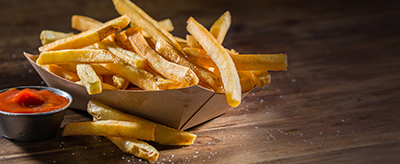

My Favorite Food
French Fries
This is the best recipe you will ever make!

Ingredients
- Russet Potato
- Vegetable Oil
- Sea Salt
Directions
- Cut into evenly sized strips
- Soak potatoes in a large bowl of water for about 30 minutes. Pat dry thoroughly with paper towels.
- Heat oil in a deep-fryer or large saucepan to 275 degrees F (135 degrees C). Gently add the potatoes in the hot oil for about 5 minutes, stirring and flipping the potatoes occasionally. Remove potatoes from oil with a slotted spoon to drain on paper towel and to cool completely.
- Heat oil in a deep-fryer or large saucepan to 350 degrees F (175 degrees C). Fry the potatoes again until golden brown, 5 to 6 minutes. Blot with a paper towel. Sprinkle with salt to serve.
For more information check out this site.